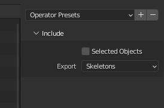
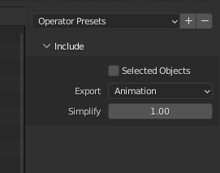

Tutorial: Animating a complex placeable
This tutorial uses Blender 3.3.1.
What is a complex animated placeable?
In NWN2, an animated placeable can consist of several parts, where each part has its own animation curve. One part must be the base part, and the other parts are the attached parts. Each part is stored in its own MDB file. The name of the attached parts must be same as the base part followed by an underscore and a two-digit number that starts with 01 for the first attached part. For example, the placeable Chest (01 Medium) is composed of the following parts:
- Base part: PLC_ML_CHESTM01.MDB
- Attached part: PLC_ML_CHESTM01_01.MDB
(You can find these files in Data\NWN2_Models.zip, located at the NWN2 installation directory).
Creating an animated complex placeable
First, you should read the tutorial about animating a simple placeable, which explains the fundamentals. This section isn’t going to be as detailed as that tutorial because I’m going to assume you know them.
Step 1: Create the models and animations
- Create the models and animations. You must create the base part, the attached parts and other objects as needed (collision mesh, walk mesh and so on).
- The name of the attached parts must be same as the base part followed by an underscore and a two digit number that starts with 01 for the first attached part.
- The attached parts must be children of the base part or another attached part.
-
In object mode, select the base part, go to the panel NWN2 in the object properties and check Base Part.

Step 2: Export a MDB file for each part
- Export to MDB only the base part.
- Do the same for each attached part.
Step 3: Export the GR2 skeleton
-
Go to File > Export > Neverwinter Nights 2 (.gr2)

-
Select Skeletons in the Export field.

-
Navigate to the directory where you want to export, type the file name, and click Export GR2.
Step 4: Export the GR2 animation
-
Go to File > Export > Neverwinter Nights 2 (.gr2)
-
Select Animation in the Export field.

-
Navigate to the directory where you want to export, type the file name, and click Export GR2.
Step 5: Edit placeables.2da
We have generated all the files we need: a MDB for each part, a GR2 containing the skeleton and a GR2 file containing the animation. Now, you must add or edit the row of the placeable in placeables.2da as follows:
- Column PlaceableModelType: set to 2 to indicate it’s an animated placeable.
- Column NWN2_Skeleton: the name of the GR2 file containing the skeleton without the file extension. For example: PLC_ML_CHESTM01.
- Column AttachedModelName: if the placeable has only one attached part, you can just set the name of the attached part. If the placeable has more than one attached part, you must set the name of the base part follow by an underscore and two question marks. For example: PLC_ML_CHESTM01_??. This also works for one attached part.
- Column SoundAppType: this is a reference to placeableobjsnds.2da,
which defines a “placeable sound set” consisting of entries for sound to
play on opened, closed, etc. The default row, row 0, is the row for a medium
wood chest, so that is the sound set that will play if this entry is left as
****.